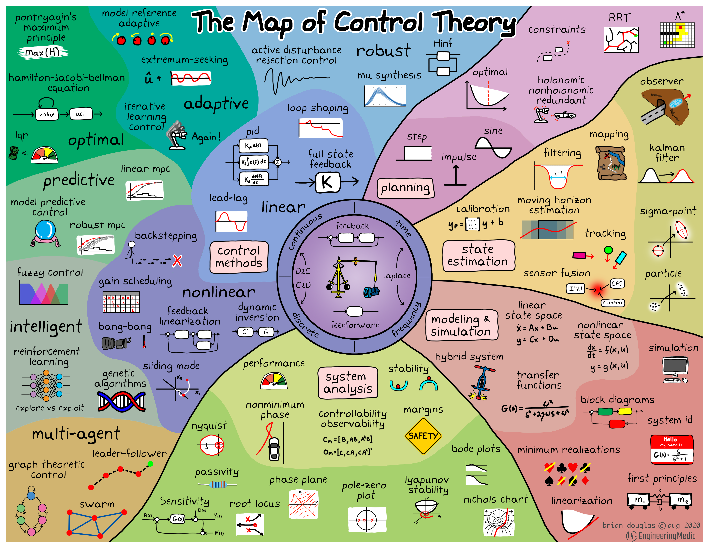

Part 2 Recap
Nyquist Stability Criterion
- Goal
- When we want to study the stability of the closed loop system:
- We want to find the roots of \(1+ùê∫(ùë†)ùêª(ùë†)=0\),
- this corresponds to take the open loop transfer function \(G(s)H(s)\), add 1 and find its zeros.
- When we want to study the stability of the closed loop system:
- Why is this difficult
- The system can be high order (e.g. order 50),
- Finding zeros would only give us stability information,
- Other information could be useful (e.g. stability margins).
Cauchy’s argument principle
- We can tell the relative difference between the number of poles and zeros inside of a contour by counting how many time the plot circles the origin and in which direction
Apply Caushy’s argument principle to know if there are zeros of \(1+GH\) in the right half plane (in which case the system is unstable)
Plot \(GH\) and shift the origin to the left by 1: we can look at how many circling of the point \(-1+0j\) the plot of \(GH\) does.
The Nyquist Plot
Steps:
- Take the open loop transfer function \(GH\)
- Plot the Nyquist plot of \(GH\)
- Set \(s=j\omega\) in the transfer function
- Sweep \(\omega \in [0, \infty]\) and plot the resulting complex numbers
- Draw the reflection about the real axis to account for negative \(\omega\)
- Note that the Nyquist contour is traced in the clock-wise direction (by convention)
Key is step #2:
- For simple transfer functions there are only four points that we need to solve for
- \(|G|\) and \(\angle G\) at \(\omega=0\) (start of the plot)
- \(|G|\) and \(\angle G\) at \(\omega=\infty\) (mid point of the plot)
- Intersections with the imaginary axis
- Intersections with the real axis
- Count the number of times the point \(-1\) is encircled and in which direction
- Determine the relative number of poles and zeros inside the nyquist contour.
Therefore: \[ Z = N + P \]
where - \(Z\) is the number of zeros in the right half plane (or poles in closed loop) - \(N\) is the number of clockwise encirclements of -1 - \(P\) is the number of open loop right half plane poles
Stability margins
Gain and Phase margin: extra gain or phase that we have available before the system starts to oscillates or become unstable
Robustness of the system
Makes it possible to quantify how stable a system is
- Systems (or designs) that have less margin could be considered as being “less” stable: smaller variations in the system could lead to instability
We want our controller to be robust to these because we cannot know our system perfectly and hence we need margins.
The more uncertainty we have the more margin we should design in.
Gain margin: The gain required to cross the 0dB line at the frequency where phase is \(-180^o\)
Phase margin: how much phase delay takes to make \(-180^o\) phase at the 0 \(dB\) gain frequency.

|

|
- Uncertainty in one specific parameters can affect you more than you think.
Loop analysis and loop shaping
Feedback Goals
Stability of the closed loop system
Performance while tracking inputs
- tracking error, typically specified in terms of steady state error to specific inputs:
- e.g., error to step inputs less than \(5\%\)
- behaviour of the transient, typically specified in terms of bandwidth, rise time, settling time, damping ratio, overshoot (these are requirements for the transfer function between \(Y\) and \(Y_{ref}\)).
- tracking error, typically specified in terms of steady state error to specific inputs:
Robustness to noise measurement and disturbances
One advantage of the Nyquist stability theorem is that it is based on the loop transfer function \(L = GR\),
Easy to see how the controller influences the loop transfer function.
Loop shaping: Choose a compensator that gives a loop transfer function with a desired shape.
Sensitivity and Complementary Sensitivity Functions
We want to design \(R\) so that all transfer functions have good properties - tracking (at freq. where this is important) - disturbance rejection (at freq. where this is important) - noise attenuation (at freq. where this is important)
- \(L(s)=G(s)R(s)\)
- \(S(s)=\frac{1}{1+L(s)}\)
- \(T(s)=\frac{L}{1+L(s)}\)

|

|
- Is a trial-and-error procedure
- We typically start with a Bode plot of the process transfer function \(G\)
- Choosing the gain crossover frequency \(\omega_{gc}\) is a major design decision: a compromise between attenuation of load disturbances and injection of measurement noise
- Finally shape the loop transfer function by changing the controller gain and adding poles and zeros to the controller transfer function
- The controller gain at low frequencies can be increased by so-called lag compensation, and the behavior around the crossover frequency can be changed by so-called lead compensation.
Nominal sensitivity peak \[ M_s = \max_{0 \leq \omega \leq \infty} | S(j\omega) | = \max_{0 \leq \omega \leq \infty} \Big| \frac{1}{1+G(j\omega)R(j\omega)} \Big| \]
- \(M_s\) gives us an indication of how far \(L\) is from -1
Relationship between loop function harmonic response and closed loop
- Relationship between the harmonic response of the loop transfer function \(L(j\omega)\) and the closed loop \(H(j\omega)\)
\[ |H(j\omega)| = \frac{|L(j\omega)|}{|1+L(j\omega)|} = \frac{|L(j\omega)|}{\sqrt{1+|L(j\omega)|^2}} \]
- Translation of design requirements into requirements on the Bode plot of the loop funtion (barriers)
- The “barriers” on the Bode plots are there to help us shape the desired harmonic response of the loop function
- The controller is designed so that the loop function always stays within the admissible regions
Root Locus
System with multiple known parameters, and one unknown or varying parameter (K)
Changing \(K\) changes the locations of the poles
How to design a system that meets the requirements:
- What value of \(K\) should I choose to meet the requirements (i.e., that places the poles at the correct location in the \(s\) plane)
What is the effect of variations on a control system that has been already designed:
- How sensitive is the system to a value of \(K\) that is slightly different than what we have estimated (or predicted).
Rules to sketch the root locus
Translate requirements into s-plane requirements:

|

|

|
The angle condition: \(\angle (G(s)) = (2n + 1)\pi\)
The magnitude condition: \(|KG(s)|=1\)
Phase Lead/Phase Lag Compensators
- A lead compensator can increase the stability or speed of reponse of a system;
- A lag compensator can reduce (but not eliminate) the steady-state error.
\[ R(s) = \frac{\frac{s}{w_z}+1}{\frac{s}{w_p}+1} = \frac{w_p}{w_z}\frac{s + w_z}{s + w_p} \]
Lead compensator: - \(w_z < w_p\) - \(K=\frac{w_p}{w_z}\) (gain)
Lag compensator - \(w_z > w_p\) - \(K=\frac{w_p}{w_z}\) (gain)
- Multiplying the two T.F. together means adding everything together on the Bode plot
- Lead/Lag compensator:
- Behaves like a real zero early on, at low frequency
- Until the real pole pulls it back at high frequency
- See blue line for its approximate representation

|
- Using the root locus and Bode plots to place the zero and pole
PID Controllers
- PID = Proportional-Integral-Derivative
- Describes how the error term is treated before being sum and sent into the plant
- It is a simple and effective controller in a wide range of applications
- Majority of controllers in industrial applications are PIDs
The general structure of a PID controller is:

|
The three gains \(K_p, K_i, K_d\) are adjustable and can be tuned to the specific application
Varying \(K_p, K_i, K_d\) means adjusting how sensitive the system is across the three paths
Ziegler Nichols tuning rules
Practical problems:
- Derivative is sensitive to noise
- Filtering and Set Point Weighting
- If the integral of the error grows too much, the control output might hit actuation limits
- Integral windup: Initializing the controller integral to a desired value or zeroing the integral value every time the error is equal to, or crosses zero reduces the problem.
- Derivative is sensitive to noise
Solving the Cruise Control Problem deploying a PID controller on a car
The Map of Control Theory
|  |
From Engineeringmedia.com
Fin